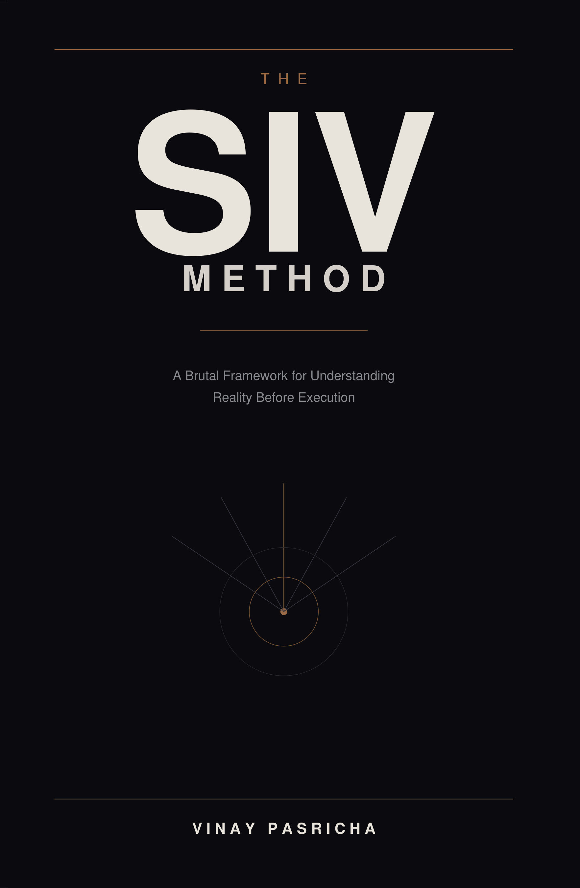

The SIV Method
A brutal framework for understanding reality before execution.

The First Distortion
The first serious mistake is almost never the one you notice. It happens earlier, quieter, deeper inside the frame.
It happens in the moment you decide you understand something before you actually do. It happens when a feeling of clarity arrives before the work of clarity has been completed. That feeling is the most dangerous product of the untrained mind.
The first distortion is always the same: the reduction of reality into something prematurely manageable.
The second failure always comes first.
The Mind Wants Relief
The human mind does not primarily seek truth. It seeks resolution.
It means that the organ you are using to understand reality is structurally biased toward ending inquiry rather than completing it. It wants the discomfort of not-knowing to stop. It wants an answer that will let it move on.
The mind treats the cessation of discomfort as the arrival of truth.
The mind wants relief. SIV demands reality.
The Problem of Lenses
No important reality can be properly understood from a single angle. This is the central doctrine of SIV.
A Vinay Lens is a formally named, self-explanatory angle of inquiry generated specifically for the issue at hand. Every lens has four essential properties: it is formal, self-explanatory, case-generated, and directional.
A weak lens decorates thought. A strong lens rearranges it. It illuminates what was previously in shadow. It makes the invisible visible.
The SIV Method
A brutal framework for understanding reality before execution. SIV — Socratic Iterative Vinay — is an amplified understanding framework that examines any subjective reality through multiple dynamically generated lenses. Built for people who are serious about work and serious about reality.
Buy on Amazon →What You'll Learn
A disciplined system for seeing reality before acting on it — built for founders, leaders, and anyone serious about understanding.
The First Distortion & Premature Closure
Why the mind closes interpretation before reality has finished disclosing itself — and why the plausible answer is the most dangerous enemy of the true one.
Borrowed Certainty & The Problem of Lenses
Certainty you did not earn is certainty you do not own. How to examine any reality through multiple dynamically generated Vinay Lenses instead of a single frame.
Pressure Before Commitment
If a claim cannot survive Socratic pressure, it has no right to guide action. The discipline of separating understanding (SIV) from execution (VIP).
Who This Book Is For
For those who prefer reality to comfort. Founders, strategists, and thinkers who know that the cost of shallow understanding is paid in failed execution, wasted effort, and broken plans.
Whether you're building a company, leading a team, or navigating a complex decision — this book gives you the framework to see more clearly before you act.
Before power is applied, reality must be examined hard enough to deserve action.— The SIV Method
Vinay Pasricha
A founder, builder, and systems thinker whose work sits at the intersection of technology, judgement, and execution. The SIV Method emerged from cost — the cost of acting on understanding that had never been properly earned. This is his second book.
Get Your Copy →More Writing
Explore essays, reflections, and ideas on entrepreneurship, education, AI, and the future of work.